Diego Maradona
Diego Armando Maradona Franco (Lanús, 30 de outubro de 1960 — Tigre, 25 de novembro de 2020) foi um treinador e futebolista argentino que atuava como meia-atacante. Considerado um dos maiores futebolistas de todos os tempos, liderou a conquista da Copa do Mundo de 1986, marcando, nas quartas de final, o Gol do Século. Ele ainda disputou mais três mundiais (1982, 1990 e 1994), tendo alcançado o vice-campeonato em 1990. A Copa de 1994 ficou marcada como o ponto final da vitoriosa trajetória de Maradona pela Seleção, após ele ser apanhado no exame antidoping na partida contra a Nigéria (a segunda da Argentina no Mundial). Por conta de sua notória participação nos mundiais, em 2002 ele foi escolhido para o Time dos Sonhos das Copas do Mundo FIFA.
Amplamente considerado um dos maiores, mais famosos e mais polêmicos jogadores do século XX, diversas personalidades e organizações reconheceram-no como um dos melhores jogadores da história do futebol e dos mundiais. Na votação do Melhor Jogador do Século XX pela FIFA, realizada em dezembro de 2000, ele ficou na primeira posição da votação popular, e em terceiro na votação dos especialistas selecionados pela FIFA. Neste mesmo ano, ele foi eleito o quinto melhor jogador da história pela IFFHS.
Enquanto jogador, Maradona foi reverenciado como uma divindade em seu país natal, sendo criada inclusive uma igreja dedicada a ele. Seu maior momento foi na Copa do Mundo de 1986 que, na opinião popular, foi ganha sozinha por El Pibe de Oro, outra de suas muitas alcunhas. Nesta Copa, que ficou conhecida como "A Copa do Maradona", Dieguito teve influência direta em 71% dos 14 gols anotados pela Argentina na campanha do título (ele marcou cinco tentos e deu cinco assistências para gols), sendo a maior porcentagem individual da história das Copas. Internacionalmente, Maradona também consagrou-se como herói da equipe italiana do Napoli, um clube que, embora tradicional, esteve entre os pequenos do país. Com El Diez, o Napoli viveu momentos de glória no final da década de 1980, ganhando seus dois únicos títulos no Campeonato Italiano e lutando de igual para igual com as maiores equipes do país. Além disso, Maradona foi o primeiro jogador na história do futebol a estabelecer duas vezes o recorde mundial de transferência mais cara: primeiro, quando foi transferido para o Barcelona por um recorde mundial de 5 milhões de euros, e o segundo quando foi transferido para o Napoli pelo valor recorde de 6,9 milhões de euros.
A carreira de Maradona, porém, foi cercada de controvérsias, que não se limitaram aos gramados. Algumas delas estão relacionadas ao seu abuso de drogas, vício que levou ao seu banimento dos gramados por duas ocasiões, em 1991 e 1994. Teve também dois filhos fora do casamento que não reconheceu como seus. E rotineiramente fazia declarações contra os bastidores da FIFA, principalmente aos dirigentes João Havelange, Joseph Blatter, Michel Platini, Franz Beckenbauer, além de Pelé, e também tem um histórico de atritos com imprensas, incluindo a de seu próprio país. Morreu aos sessenta anos de idade, na sua residência em Tigre, vítima de uma parada cardiorrespiratória.
Primeiros Anos
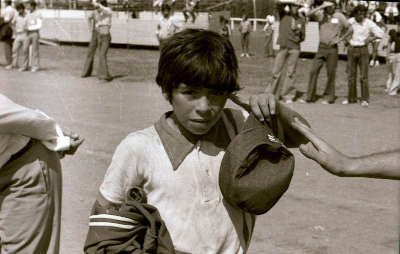Diego Armando Maradona nasceu em 30 de outubro de 1960, no Hospital Policlínico Evita em Lanús, Província de Buenos Aires, em uma família pobre de origem galega que havia se mudado da Província de Corrientes. Ele foi criado em Villa Fiorito, uma favela na periferia sul de Buenos Aires, Argentina, sendo o primeiro filho depois de quatro filhas. Ele tinha dois irmãos mais novos, Hugo (el Turco) e Raúl (Lalo), ambos também jogadores profissionais de futebol. Seu pai Diego Maradona "Chitoro" (1927–2015) era descendente de Guaranis, e sua mãe Dalma Salvadora Franco, "Doña Tota" (1930–2011), era de ascendência italiana.
Os pais de Maradona nasceram e foram criados na cidade de Esquina, na província de Corrientes, no nordeste do país, morando a apenas duzentos metros um do outro nas margens do rio Corriente. Em 1950, eles deixaram Esquina e se estabeleceram em Buenos Aires. Maradona recebeu sua primeira bola de futebol como um presente aos três anos de idade e rapidamente se tornou dedicado ao jogo.
Aos oito anos, Maradona foi observado por um caçador de talentos enquanto jogava no clube de sua vizinhança, Estrella Roja. Atuou no Los Cebollitas, o time de juniores do Argentinos Juniors de Buenos Aires. Como um goleiro de 12 anos, ele divertia os espectadores mostrando sua magia com a bola durante os intervalos dos jogos da primeira divisão. Ele nomeou o craque brasileiro Rivellino e o ponta-esquerda do Manchester United George Best entre suas inspirações enquanto crescia.
Carreira Em Clubes
Argentinos Juniors
Aos nove anos, seu talento com a bola já o fazia ser a criança mais popular da favela em que morava, no subúrbio de Buenos Aires. Um colega havia sido aprovado em um teste para as categorias de base do Argentinos Juniors, e respondeu aos elogios do treinador dizendo que conhecia um garoto ainda melhor. O treinador, Francis Cornejo, deu-lhe então dez pesos para que pedisse a esse outro jovem para ir vê-lo. Cornejo e outros observadores do clube, incrédulos com o que viram no outro menino, foram acompanhá-lo na volta até a casa deste e, pedindo à mãe dele, conferiram sua documentação para desfazer qualquer engano plausível. Viram que Maradona realmente tinha apenas nove anos.
Os pais foram então convencidos a colocar Maradona no Argentinos, clube pequeno da capital, mas famoso pelo bom trabalho que desenvolvia com as categorias de base. Com quinze anos, disputava partidas preliminares, já atraindo multidões. Quando finalmente foi lançado entre os profissionais, não saiu mais. Demonstrava um repertório completo certeiro com a sua mágica perna esquerda: lançamentos, passes, dribles curtos, chutes certeiros de curta e longa distância, cobranças de falta e escanteios. Aos dezessete anos, recebeu a primeira convocação para a Seleção Argentina, da qual foi polemicamente cortado na Copa do Mundo de 1978.
1978 também significaria o ano em que foi pela primeira vez artilheiro do Campeonato Argentino. Em 1979, seria artilheiro tanto do campeonato argentino quanto do Campeonato Metropolitano, torneio que reunia os clubes da Grande Buenos Aires e que era na época considerado mais importante até do que o campeonato nacional. Naquele ano, seria eleito pela primeira vez o melhor jogador sul-americano.
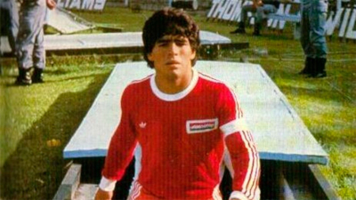A dose repetiu-se em 1980: Maradona foi artilheiro dos dois campeonatos e eleito outra vez o melhor jogador da América do Sul, com o adicional de ter levado o Argentinos Juniors ao vice-campeonato nacional, melhor resultado do clube até então. O Boca Juniors, que não conseguia títulos argentinos desde 1976, resolveu ir atrás dele, o que era a realização de um sonho para o jogador: Maradona sempre fora um torcedor xeneize fanático. Todavia, jamais seria esquecido na equipe que o revelou: o Argentinos renomearia seu campo para Estádio Diego Armando Maradona.
Boca Juniors
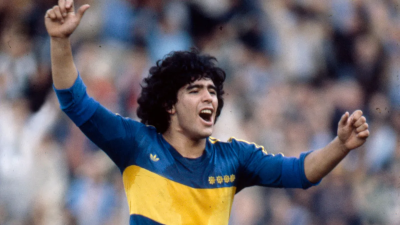E foi em um amistoso contra o Argentinos que Maradona fez sua estreia pelo Boca, marcando de pênalti, atuando pelos dois times. Parte da concordância do Argentinos em emprestá-lo estava em uma cláusula do contrato de venda em que proibia que Diego enfrentasse a antiga equipe em jogos oficiais. Dois dias depois, atraiu 65 mil pessoas à Bombonera para vê-lo marcar duas vezes em vitória por 4–1 na primeira partida oficial, contra o Talleres de Córdoba. Amistosos, todavia, seriam continuamente disputados paralelamente às disputas do metropolitano, servindo para arrecadar finanças ao clube e gerando também uma Diegomania. Em dois deles, enfrentou dois adversários que lhes seriam comuns: o Milan, em San Siro (vitória por 2–1) e Zico, contra o Flamengo, no Maracanã (derrota por 0–2).
Naquele ano de 1981, com o Boca, Maradona fez grande dupla com Miguel Ángel Brindisi, com os dois marcando juntos 33 dos 60 gols que reconduziram o time ao título metropolitano — a primeira conquista do clube auriazul em cinco anos.
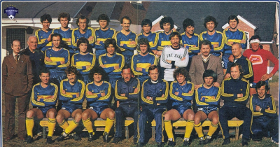Maradona também marca em seu primeiro Boca x River, em um 3–0 listado entre as dez inesquecíveis vitórias do Boca em Superclásicos pela enciclopédia do centenário do clube; ele fez o último gol, deslocando o goleiro Ubaldo Fillol e completando para as redes antes que Alberto Tarantini conseguisse bloquear seu ângulo.
Contra o grande rival, marcaria em todos os clássicos disputados em 1981. O segundo deles, empatado em 1–1, foi de forma similar: tirando Fillol da jogada e marcando antes de Tarantini chegar. Os outros dois foram pelo campeonato nacional. Este foi disputado em quatro chaves de sete times onde os dois primeiros de cada uma se enfrentariam em mata-matas até a final, com o Boca liderando a sua, apesar de não vencer o River – foram uma derrota por 2–3 e um empate em 2–2, neste com Maradona marcando os dois, empatando a partida no último minuto.
Nas quartas-de-final, os boquenses enfrentaram o Vélez Sarsfield. Na Bombonera, em um tumultuado jogo de ida, em que os dois times terminaram a partida com nove jogadores, Maradona acabaria revidando uma das faltas que sofreu e foi suspenso pela comissão disciplinar da AFA. Seria seu último jogo oficial pelo clube do coração: o Boca acabaria eliminado pelo adversário na partida de volta. Maradona ainda participaria de amistosos em excursões do clube pelas Américas e Ásia antes de ser vendido para o Barcelona por uma transferência recorde de mais de 7 milhões de dólares acertada pouco antes da Copa do Mundo de 1982. Coincidência ou não, sem o seu grande astro, o Boca só voltaria a ser campeão argentino onze anos depois.
Barcelona
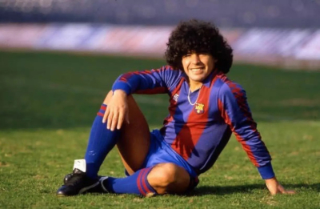Maradona chegou à Catalunha como um messias. O Barça vivia carência de títulos desde o final da década de 1950. Desde 1960, só conseguira vencer o Campeonato Espanhol em 1974. Via o rival Real Madrid se distanciar cada vez mais no ranking de vencedores e ainda sentia o Atlético de Madrid aproximando-se, com um título a menos. O clube fez de tudo para que seu astro se sentisse à vontade, contratando vários argentinos para servirem-lhe de assessores e funcionários. A estratégia não teria bons resultados: o craque acabou por fechar-se naquele círculo de convivências e demoraria a se adaptar no estrangeiro.
Na primeira temporada, ele enfrentou o primeiro problema: em dezembro de 1982, sofreu de hepatite e ficou de fora dos campos por três meses. Os blaugranas terminaram apenas em quarto; o título de 1982–1983 ficou com o Athletic Bilbao. Na Copa do Rei, porém, decidiu a final contra o Real Madrid, marcando nos dois jogos da decisão e sendo aplaudido de pé pela torcida do arquirrival após a vitória por 2–1 em pleno Santiago Bernabéu – na partida de ida, no Camp Nou, o Barcelona havia deixado o rival empatar após estar vencendo por 2–0.
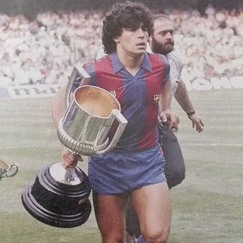Mal iniciou a segunda temporada e, num jogo contra o Athletic, Maradona sofreu uma entrada bastante desleal do adversário Andoni Goikoetxea, fraturando o tornozelo esquerdo. O astro levou 106 dias para retornar ao futebol. Quando voltou, conduziu os blaugranas ao caminho do título. No entanto, por um ponto, a taça ficou justamente com o Athletic. Ambos os times decidiram também a Copa do Rei, e um novo dia ruim contra a equipe basca (que vence por 1–0) fez Maradona surtar. Ele protagonizou uma briga generalizada entre os jogadores.
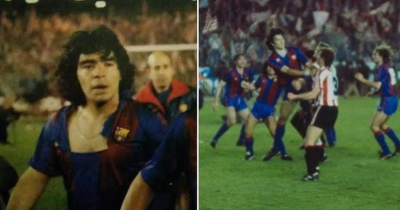O craque argentino, que já não tinha um relacionamento bom com a diretoria do Barcelona, foi praticamente descartado após receber uma suspensão de três meses em razão da confusão: a cúpula culé aceitou a oferta do pequeno Napoli, da Itália. Desgostoso com o que julgou como falta de esforço do clube em defendê-lo nos tribunais, Maradona acatou a transferência, encerrando um ciclo de dois anos de altos e baixos no Camp Nou.
Declararia em sua autobiografia, Yo Soy Diego, que o presidente Josep Lluís Núñez teria inveja de sua popularidade e era o principal responsável direto por sua saída. No livro, Maradona também apontou a coleção de fatores que o impediram de triunfar no Barcelona: desde a hepatite e lesões até gostar mais de Madrid. Ele também revelou que foi na Catalunha que começou seu relacionamento com as drogas. Aceitou a proposta do Napoli pois também estava arruinado financeiramente; chegou a doar a casa que tinha em Barcelona para pagar suas dívidas.
Napoli
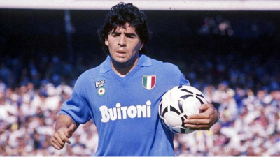Embora tradicional, a equipe napolitana era minúscula. Seus troféus resumiam-se a títulos nas divisões inferiores e a duas conquistas na Copa da Itália. Maradona foi logo amado e venerado como um rei, chegando de helicóptero a um Estádio San Paolo tomado por torcedores que ainda custavam a acreditar. Ele, curiosamente, poderia ter chegado antes ao time: o clube o havia sondado em 1979, quando ainda estava no Argentinos Juniors, mas ele recusara a proposta na época. "Para mim, Napoli era apenas uma coisa italiana, como pizza", comentou.
O espanto foi geral: a equipe mais vencedora do país, a Juventus, também estaria interessada, de acordo com a imprensa. Maradona terminou por escolher o clube celeste porque "foi o único a me fazer uma proposta real e porque o Giampiero Boniperti, ex-jogador e presidente da Juventus na época, já havia dito que um jogador com meu porte físico não chegaria a lugar algum". De acordo com as lendas, o presidente do Napoli, Corrado Ferlaini, teria blefado: depositou na federação italiana um envelope vazio, onde deveria estar o contrato do jogador, a fim de registrá-lo logo. Era o que ele precisava para ganhar tempo, enquanto a manobra era descoberta, para levantar o dinheiro para pagar o Barcelona.
Na primeira temporada, o clube ficou apenas em oitavo, mas somente dez pontos atrás do campeão Verona. Na segunda, a de 1985–1986, conseguiu um terceiro lugar. Sua terceira temporada começou com ele já consagrado em todo o planeta, com a conquista da Copa do Mundo de 1986. Em setembro, porém, surge a primeira grande polêmica extracampo: sua ex-empregada doméstica, Cristina Sinagra, denuncia que Maradona é o pai do filho que ela teve. A paternidade é confirmada posteriormente na justiça. O filho, Diego Sinagra (também conhecido como Diego Armando Maradona Jr.), jamais seria assumido e os dois só teriam seu primeiro encontro em 2003. Ainda assim, é na temporada 1986–1987 que Maradona dá ao Napoli seu primeiro título na Serie A, sobre a poderosa Juventus. A festa termina completa no clube e na vida pessoal: paralelamente, o Napoli é também campeão da Copa da Itália, e nasce sua filha Dalma (batizada com o mesmo nome da mãe de Diego).
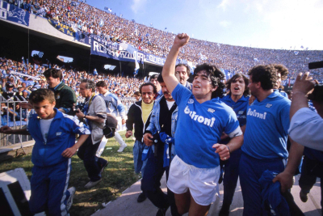Na temporada seguinte, Maradona, com quinze gols, alcança a artilharia do campeonato. O vice artilheiro é a sua dupla ofensiva, o brasileiro Careca – que fora para a equipe justamente para poder jogar ao lado de Maradona – com treze. O bi, porém escapa por três pontos: o título fica com o Milan de Marco Van Basten e Ruud Gullit, que consegue a liderança em vitória direta, em plena Nápoles, quando os dois clubes enfrentaram-se na antepenúltima rodada. O clube rossonero tornar-se-ia o maior rival do Napoli pelos títulos italianos: a Juventus decaía com a aposentadoria de Michel Platini em 1987 e a Internazionale vivia certa carência. Na Copa dos Campeões da UEFA, o Napoli cai cedo: é eliminado pelo Real Madrid, primeiro adversário que enfrenta.
Na temporada 1988–1989, o campeonato italiano vai surpreendentemente para a Inter de Milão, com a perseguição única do Napoli (único time na reta final com chances de tirar o título da Inter) terminando em vão. O consolo fica por conta da Copa da UEFA: Maradona lidera o Napoli na campanha rumo ao primeiro título continental do clube. Nos mata-matas finais, o clube passa pela rival Juventus e pelo Bayern de Munique até chegar na decisão, contra o Stuttgart. Os alemães são vencidos no embalo da dupla Maradona e Careca: ambos marcam na vitória de virada no jogo de ida, em Nápoles, e seguram o empate na Alemanha Ocidental. Paralelamente, naquele ano ele casa-se em um estádio fechado com a namorada de infância, Claudia Vilafañe, e nasce Gianinna, sua segunda filha.
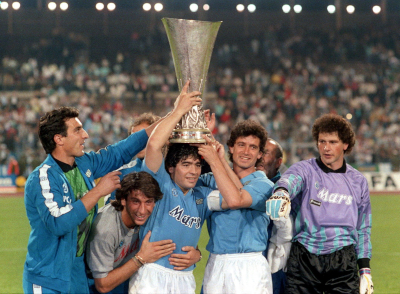Durante a temporada 1989–1990, o argentino novamente destacou-se como o maior jogador do Napoli na conquista do Scudetto, com dois pontos de vantagem sobre o Milan. Maradona vivia o auge da carreira. A veneração em Nápoles em torno dele era tamanha que ele sentiu-se à vontade para convocar a população local para torcer pela Argentina, e não pela Itália, na Copa do Mundo de 1990, a ser realizada em solo italiano em semanas. Gerou enorme polêmica no resto do país, notadamente no norte, região dos times mais tradicionais, ressentidos com o sucesso meteórico do Napoli, que, por sua vez, era um clube de uma região historicamente desfavorecida no país. O presidente da federação italiana chegou a ir a público pedir que os cidadãos napolitanos torcessem pela Azzurra, e pesquisas de opinião foram feitas por jornais e revistas para calcular a que ponto Maradona conseguira influenciar Nápoles.
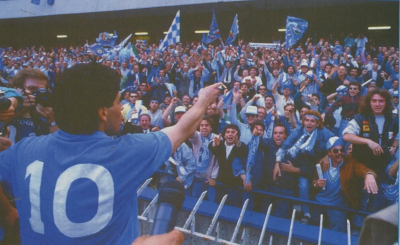Na Copa, Maradona liderou uma Argentina esfrangalhada ao vice-campeonato, mas eliminando a Itália nas semifinais, aumentando o rancor do resto do país.
1990-1991 significar-lhe-ia um baque maior que a fratura em 1984 e as constantes pancadas no duro futebol italiano: novamente, o Napoli caiu cedo na Copa dos Campeões, na disputa por pênaltis contra os soviéticos do Spartak Moscou. Nada comparado ao que vem em março de 1991: seu exame antidoping após partida contra o Bari dá positivo para cocaína, escancarando o vício do astro nas drogas.
Ele, ligado por provas robustas com a Camorra, a máfia napolitana, foi suspenso do futebol por quinze meses. Entra em depressão e, no mês seguinte, em abril, é, sob efeito de drogas, preso em Buenos Aires pela polícia no bairro de Caballito.
Decadência
O Napoli conseguiu se virar na temporada 1991–1992 sem seu maior ícone, terminando em quarto. Maradona, decidido a deixar o time, protagonizou uma batalha judicial que durou 86 dias. A liberação foi brecada pelo presidente do clube, que estava brigado com o argentino. Após intervenção da FIFA, Maradona conseguiu se desligar do Napoli e acertou um retorno à Espanha, agora como jogador do Sevilla, na época comandado por Carlos Bilardo, seu ex-técnico na Seleção. Anos mais tarde, Ferlaini, o antigo presidente do Napoli, declararia que Diego fora salvo diversas outras vezes do antidoping, que era burlado com a urina de jogadores "limpos" nas vezes em que o argentino era sorteado.
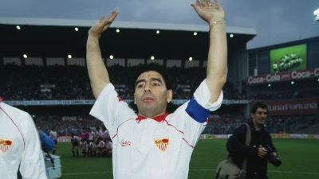Sua estadia no clube andaluz não durou mais que a temporada 1992–1993, onde fora apenas razoável: Maradona, pesando mais do que deveria, descobriu que os diretores do Sevilla, com suspeitas sobre suas saídas noturnas, contrataram detetives para monitorá-lo. O argentino, que também desentendera-se com Bilardo, abandonou o time imediatamente e acertou outro regresso, desta vez ao país natal, contratado pelo Newell's Old Boys. Mesmo recuperando a forma, durou menos ainda na equipe de Rosário: uma sucessão de lesões musculares provocaram o término de seu contrato, após apenas cinco jogos oficiais e alguns amistosos, um deles, curiosamente, contra o Vasco da Gama.
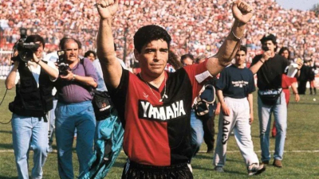Deprimido, Maradona afundou cada vez mais nas drogas. Em fevereiro de 1994, irritado com o assédio da mídia, atirou com uma espingarda de ar comprimido em jornalistas que faziam plantão em frente à sua casa. Acima do peso e desmotivado, a impressão geral era a de que ele abandonaria a carreira antes da Copa do Mundo de 1994. Conheceu então um fisiculturista em Buenos Aires que prometeu deixá-lo em forma novamente. A promessa foi cumprida, mas um novo antidoping durante a Copa desmascararia que, por trás do milagre, estava a proibida substância efedrina, uma droga usada para emagrecer. A FIFA terminou por puni-lo com outros quinze meses de banimento.
Sem poder jogar, Maradona teve uma rápida passagem como diretor-técnico do pequeno Textil Mandiyú. Em poucas semanas, porém, abandonou o cargo do time de Corrientes. Assumiu como treinador do Racing, mas em março do ano seguinte desvincula-se dele também; o presidente que o havia contratado havia perdido as eleições. As duas experiências foram curtas e pouco alentadoras: no Mandiyú, foram doze partidas e apenas uma vitória e, no Racing, onze jogos e apenas dois triunfos. Poderia ter tido menos jogos ainda no Racing: após um 0 a 0 no clássico da cidade de Avellaneda, contra o Independiente, em que foi expulso pelo árbitro, ameaçou sair do cargo, mas foi contido pelo presidente.
Com o fim da punição, voltou ao seu amado Boca Juniors, comprado por dez milhões de dólares pelo Grupo Eurnekian, que em troca teria os direitos televisivos sobre onze partidas. O retorno, iniciado em jogo contra o Colón, foi estampado até em seus cabelos: Maradona descoloriu uma faixa do lado superior direito, simbolizando a faixa dourada do uniforme boquense. O clube acertou também com seu amigo Claudio Caniggia, outro notório usuário de cocaína. Foi no jogo seguinte, o primeiro oficial dele contra o Argentinos Juniors, que ele marcou seu primeiro gol na volta ao Boca.
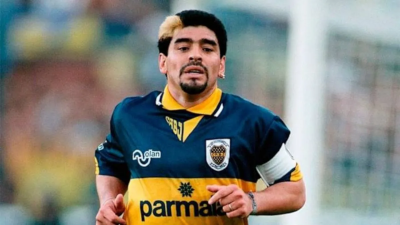O Boca não ganhava títulos argentinos havia cinco campeonatos – o último fora o Apertura de 1992. Com Maradona e Caniggia em grande parceria, o clube conseguiu confortável liderança no Apertura 1995. Porém, em partidas sem seu maior astro, os xeneizes perdem pontos preciosos, chegando e levar de 4–6 para o Racing em plena Bombonera — a mesma quantidade de gols que haviam tomado em todo o torneio, até então. O clube deixou o título escapar para o Vélez Sarsfield e terminou apenas em quarto. O mesmo clube ganhou o Clausura 1996, com o Boca, comandado por Carlos Bilardo (cuja contratação ele se opusera; no mesmo ano, brigaria com o presidente boquense, Mauricio Macri), ficando em quinto. A edição do torneio é mais lembrada por uma goleada de 4–1 sobre o River Plate em que a afinada dupla Caniggia e Maradona se beija na boca, em comemoração após o terceiro gol do atacante loiro.
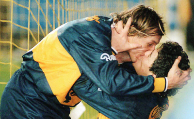No entanto, foi o rival quem viveu períodos melhores: ganhou o Apertura 1996 (o Boca, sem tantas presenças de Maradona, fica apenas em décimo), a Copa Libertadores da América de 1996, o Clausura 1997 (nono lugar para o Boca, que só vê Maradona jogar uma vez) e o Apertura 1997. Durante este último campeonato, em que, no início, chegou a ser novamente pego no antidoping, Maradona fez sua última partida profissional, justamente em um Superclássico no Monumental de Núñez, em 25 de outubro. Jogou o primeiro tempo da partida e foi substituído pelo jovem Juan Román Riquelme. O Boca venceu por 2–1 e conseguiu a liderança com dois pontos de vantagem sobre o arquirrival, mas Maradona preferiu anunciar sua retirada, após rumores de novo antidoping positivo. O River conseguiria retomar a dianteira e seria campeão com um ponto de vantagem sobre o Boca.
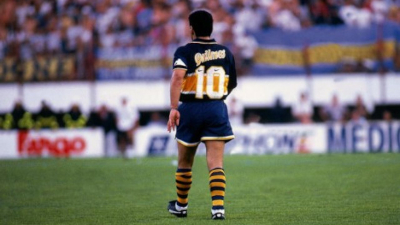Falando de si na terceira pessoa, Maradona resumiu seu retorno infrutífero em títulos ao Boca: "O Maradona não está feliz porque sabe que o Maradona está abaixo do padrão em que normalmente se coloca". Ainda assim, houve setores da imprensa que defenderam sua convocação para a Copa do Mundo de 1998, o que o faria ser um dos recordistas em participações no torneio.